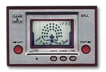
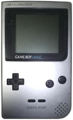
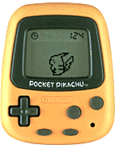
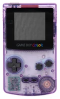
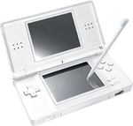
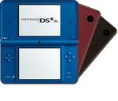
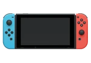
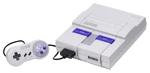
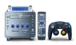
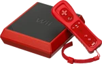

Nintendo Co., Ltd. is a Japanese multinational video game company headquartered in Kyoto. It develops, publishes and releases both video games and video game consoles.
-
History
Nintendo was founded in 1889 as Nintendo Karuta by craftsman Fusajiro Yamauchi and originally produced handmade hanafuda playing cards. After venturing into various lines of business during the 1960s and acquiring a legal status as a public company, Nintendo distributed its first console, the Color TV-Game, in 1977. It gained international recognition with the release of Donkey Kong in 1981 and the Nintendo Entertainment System and Super Mario Bros. in 1985. Since then, Nintendo has produced some of the most successful consoles in the video game industry, such as the Game Boy, the Super Nintendo Entertainment System, the Nintendo DS, the Wii, and the Switch. It has created numerous major franchises, including Mario, Donkey Kong, The Legend of Zelda, Metroid, Fire Emblem, Kirby, Star Fox, Pokémon, Super Smash Bros., Animal Crossing, Xenoblade Chronicles, and Splatoon, and Nintendo's mascot, Mario, is internationally recognized. The company has sold more than 5.592 billion video games and over 836 million hardware units globally, as of March 2023. Nintendo has multiple subsidiaries in Japan and abroad, in addition to business partners such as HAL Laboratory, Intelligent Systems, Game Freak, and The Pokémon Company. Nintendo and its staff have received awards including Emmy Awards for Technology & Engineering, Game Awards, Game Developers Choice Awards, and British Academy Games Awards. It is one of the wealthiest and most valuable companies in the Japanese market.
-
1889–1932: Origin as a playing card business
Nintendo was founded as Nintendo Karuta on 23 September 1889 by craftsman Fusajiro Yamauchi in Shimogyō-ku, Kyoto, Japan, as an unincorporated establishment, to produce and distribute Japanese playing cards, or karuta (かるた, from Portuguese carta, 'card'), most notably hanafuda (花札, 'flower cards'). The name "Nintendo" is commonly assumed to mean "leave luck to heaven", but the assumption lacks historical validation; it can alternatively be translated as "the temple of free hanafuda". Hanafuda cards had become popular after Japan banned most forms of gambling in 1882, though tolerated hanafuda. Sales of hanafuda cards were popular with the yakuza-ran gaming parlors in Kyoto.
-
1933–1968: Incorporation, expansion, and diversification
In 1933, Sekiryo Kaneda established the company as a general partnership named Yamauchi Nintendo & Co., Ltd. investing in the construction of a new corporate headquarters located next to the original building, near the Toba-kaidō train station. Because Sekiryo's marriage to Yamauchi's daughter produced no male heirs, he planned to adopt his son-in-law Shikanojo Inaba, an artist in the company's employ and the father of his grandson Hiroshi, born in 1927. However, Inaba abandoned his family and the company, so Hiroshi was made Sekiryo's eventual successor.
-
1969–1972: Classic and electronic toys
Yamauchi's experience with the previous initiatives led him to increase Nintendo's investment in a research and development department in 1969, directed by Hiroshi Imanishi, a long-time employee of the company. Yokoi was moved to the newly created department and was responsible for coordinating various projects. Yokoi's experience in manufacturing electronic devices led Yamauchi to put him in charge of the company's games department, and his products would be mass-produced. During this period, Nintendo built a new production plant in Uji, just outside of Kyoto, and distributed classic tabletop games such as chess, shogi, go, and mahjong, and other foreign games under the Nippon Game brand. The company's restructuring preserved a couple of areas dedicated to playing card manufacturing.
-
1973–1978: Early video games and Color TV-Game
The growing demand for Nintendo's products led Yamauchi to further expand the offices, for which he acquired the surrounding land and assigned the production of cards to the original Nintendo building. Meanwhile, Yokoi, Uemura, and new employees such as Genyo Takeda, continued to develop innovative products for the company. The Laser Clay Shooting System was released in 1973 and managed to surpass bowling in popularity. Though Nintendo's toys continued to gain popularity, the 1973 oil crisis caused both a spike in the cost of plastics and a change in consumer priorities that put essential products over pastimes, and Nintendo lost several billion yen.
-
1979–1987: Game and Watch, arcade games, and Nintendo Entertainment System
Two key events in Nintendo's history occurred in 1979: its American subsidiary was opened in New York City, and a new department focused on arcade game development was created. In 1980, one of the first handheld video game systems, the Game & Watch, was created by Yokoi from the technology used in portable calculators. It became one of Nintendo's most successful products, with over 43.4 million units sold worldwide during its production period, and for which 59 games were made in total.
-
1988–1992: Game Boy and Super Nintendo Entertainment System
In 1988, Gunpei Yokoi and his team at Nintendo R&D1 conceived the Game Boy, the first handheld video game console made by Nintendo. Nintendo released the Game Boy in 1989. In North America, the Game Boy was bundled with the popular third-party game Tetris after a difficult negotiation process with Elektronorgtechnica. The Game Boy was a significant success. In its first two weeks of sale in Japan, its initial inventory of 300,000 units sold out, and in the United States, an additional 40,000 units were sold on its first day of distribution. Around this time, Nintendo entered an agreement with Sony to develop the Super Famicom CD-ROM Adapter, a peripheral for the upcoming Super Famicom capable of playing CD-ROMs. However, the collaboration did not last as Yamauchi preferred to continue developing the technology with Philips, which would result in the CD-i, and Sony's independent efforts resulted in the creation of the PlayStation console.
-
1993–1998: Nintendo 64, Virtual Boy, and Game Boy Color
In mid-1993, Nintendo and Silicon Graphics announced a strategic alliance to develop the Nintendo 64. NEC, Toshiba, and Sharp also contributed technology to the console. The Nintendo 64 was marketed as one of the first consoles to be designed with 64-bit architecture. As part of an agreement with Midway Games, the arcade games Killer Instinct and Cruis'n USA were ported to the console. Although the Nintendo 64 was planned for release in 1995, the production schedules of third-party developers influenced a delay, and the console was released in June 1996 in Japan, September 1996 in the United States and March 1997 in Europe. By the end of its production in 2002, around 33 million Nintendo 64 consoles were sold worldwide, and it is considered one of the most recognized video game systems in history. 388 games were produced for the Nintendo 64 in total, some of which – particularly Super Mario 64, The Legend of Zelda: Ocarina of Time, and GoldenEye 007 – have been distinguished as some of the greatest of all time.
-
1999–2003: Game Boy Advance and GameCube
In May 1999, with the advent of the PlayStation 2, Nintendo entered an agreement with IBM and Panasonic to develop the 128-bit Gekko processor and the DVD drive to be used in Nintendo's next home console. Meanwhile, a series of administrative changes occurred in 2000, when Nintendo's corporate offices were moved to the Minami-ku neighborhood in Kyoto, and Nintendo Benelux was established to manage the Dutch and Belgian territories.
-
2004–2009: Nintendo DS and Wii
In 2004, Nintendo released the Nintendo DS, which featured such innovations as dual screens – one of which being a touchscreen – and wireless connectivity for multiplayer play. Throughout its lifetime, more than 154 million units were sold, making it the most successful handheld console and the second bestselling console in history. In 2005, Nintendo released the Game Boy Micro, the last system in the Game Boy line.Sales did not meet Nintendo's expectations, with 2.5 million units being sold by 2007. In mid-2005, the Nintendo World Store was inaugurated in New York City.
-
2010–2016: Nintendo 3DS, Wii U, and mobile ventures
Following an announcement in March 2010, Nintendo released the Nintendo 3DS in 2011. The console produces stereoscopic effects without 3D glasses. By 2018, more than 69 million units had been sold worldwide; the figure increased to 75 million by the start of 2019. In 2011, Nintendo celebrated the 25th anniversary of The Legend of Zelda with the orchestra concert tour The Legend of Zelda: Symphony of the Goddesses and the video game The Legend of Zelda: Skyward Sword.
-
2017–present: Nintendo Switch and expansion to other media
The Wii U's successor in the eighth generation of video game consoles, the Nintendo Switch, was released in March 2017. The Switch features a hybrid design as a home and handheld console, Joy-Con controllers that each contain an accelerometer and gyroscope, and the simultaneous wireless networking of up to eight consoles. To expand its library, Nintendo entered alliances with several third-party and independent developers; by February 2019, more than 1,800 Switch games had been released. Worldwide sales of the Switch exceeded 55 million units by March 2020. In April 2018, the Nintendo Labo line was released, consisting of cardboard accessories that interact with the Switch and the Joy-Con controllers. More than one million units of the Nintendo Labo Variety Kit were sold in its first year on the market.
1889–1972: Early history
1973–present: History in electronics
Logos' History
-

(1889–1950)
-
(1950–1960)
-
1960–1965
-
(1965–1967)
-

(1967–1968)
-
(1968–1970)
-
(1970–1972)
-
(1972-1975)
-

(1975–2006)
-
(2006–2016)
-
(2016–present)
Consoles' History
Hand Consoles
-

Game & Watch
(1980-1991)
-

Game Boy
(1989)
-

Virtual Boy
(1995)
-

Game Boy Pocket
(1996)
-

Game Boy Light
(1997)
-

Pokémon Pikachu
(1998)
-

Game Boy Color
(1998)
-

Pokémon Pikachu 2 GS
(1999)
-

Game Boy Advance
(2001)
-

Pokémon mini
(2001)
-

Game Boy Advance SP
(2003)
-

Nintendo DS
(2004)
-

Game Boy Micro
(2005)
-

Nintendo DS Lite
(2006)
-

Nintendo DSi
(2008)
-

Nintendo DSi XL
(2009)
-

Nintendo 3DS
(2011)
-

Nintendo 3DS XL
(2012)
-

Nintendo 2DS
(2013)
-

New Nintendo 3DS
(2014)
-

New Nintendo 3DS XL
(2014)
-

Nintendo Switch
(2017)
-

New Nintendo 2DS XL
(2017)
-

Nintendo Switch Lite
(2019)
-

Game & Watch: Super Mario Bros.
(2020)
-

Game & Watch: The Legend of Zelda
(2021)
Home and Watch Consoles
-

Color TV Game series
(1977-1980)
-

Nintendo Entertainment System/Famicom
(1985)
-

Super Nintendo Entertainment System/Super Famicom
(1991)
-

Nintendo 64
(1996)
-

Nintendo GameCube
(2001)
-

Panasonic Q
(2001)
-

wii
(2006)
-

Wii Family Edition
(2011)
-

Wii U
(2012-2017)
-

Wii Mini
(2012)
-

NES Classic Edition
(2016)
-

Nintendo Switch
(2017-present)
-

Super Nintendo Entertainment System Classic Edition
(2017)